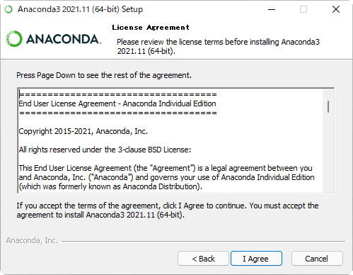

Chapter 1
章リード
リード文。読者に話しかける感じで、この節で説明することを知ると、何ができるようになるのかを伝えてください。あああああああああああああああああああああああああああああああいああ
Chapter 4でオリジナルの関数をまとめたモジュールを作りましたが、実はPythonには、はじめから多数のモジュールが付属しています。これら付属のモジュールを総称して「標準ライブラリ」と呼びます。
標準ライブラリのモジュールを利用することで、プログラムでできることの範囲をさらに広げることができます。標準ライブラリはimport文でインポートするだけですぐに利用できます。
from datetime import date, timedelta #L001
start = date( 2018, 6, 18 ) #←コメントの先頭を←にすると引き出し線に
for days in range(14): #←繰り返しのfor文
cur = start + timedelta( days=days )
print( cur )2018/6/18
2018/6/18
2018/6/18
2018/6/18no title code複数のクラスをカンマ区切りで指定すると、まとめてインポートできます。
開始日から2週間分の日付を表示するプログラムを書いてみましょう。「2週間分」のように複数のデータを作る場合、for文を使うことはすぐ思いつきます。ただし、dateオブジェクトだけで2週間分の日付を作ろうとするとうまくいきません。その月の最終日を越えた日付、たとえば33日などを渡すと、バリューエラーが発生してしまうからです。そこで、開始日のdateオブジェクトを作り、そこに経過日数のtimedeltaオブジェクトを加えて目的の日付を作ります。\(x^2\)
$$y=x^2+\frac{1}{3}\sqrt{2}$$
| モジュール名 | 説明 |
|---|---|
| csv | CSVファイルの読み込みと書き込みを行う |
| datetime | 日時を扱う |
| json | Webでよく用いられるJSON形式のデータを扱う |
| math | 三角関数など数値計算用の関数がまとめられている |
| pathlib | ファイルやフォルダの操作を行う |
| random | 乱数（デタラメに見える数）を生成する |
| tkinter | GUIアプリケーションを作る |
| zipfile | ZIP形式の圧縮ファイルを扱う |

かなり強引なフェンス記法です。コラムタイトルのところはひとまずタグ直書きでsection生成を避けています。ただし、見出しのあとに1行空けないと、なぜかMarkdown記法が効かなくなります。
開始日から2週間分の日付を表示するプログラムを書いてみましょう。「2週間分」のように複数のデータを作る場合、for文を使うことはすぐ思いつきます。ただし、dateオブジェクトだけで2週間分の日付を作ろうとするとうまくいきません。その月の最終日を越えた日付、たとえば33日などを渡すと、バリューエラーが発生してしまうからです。そこで、開始日のdateオブジェクトを作り、そこに経過日数のtimedeltaオブジェクトを加えて目的の日付を作ります。